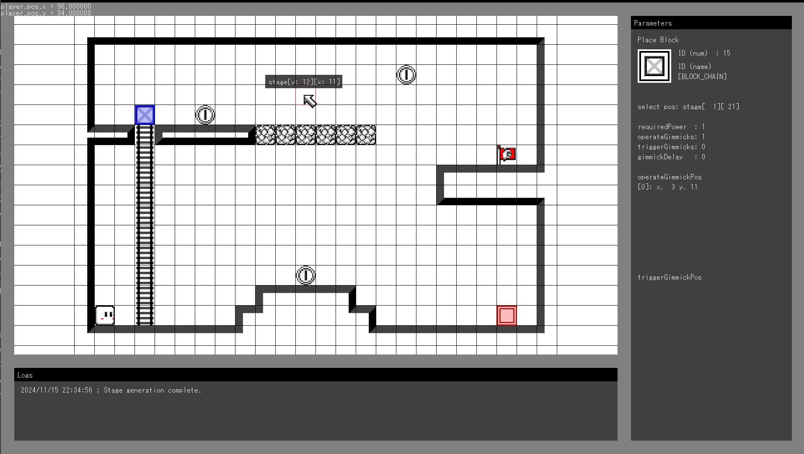

UIも含めた専用エディター
ゲームの基盤が揃った段階で、ステージ制作のためのエディターをUIも含めて制作しました。ブロックを配置するだけでなく、スイッチを押したときにどこが動作するかも設定できます。
WORK 07 / 1年次 / 3人チーム
初めてのチーム制作作品です。プレイヤーの挙動と当たり判定といった基盤から、エフェクトや画面全体の見た目までを担当しました。
ZIP · 10.8 MiB · Monokushon.zip
ZIPを展開し、同梱の実行ファイルを起動してください。操作方法や必要な環境は、同梱の説明を確認してください。
配布ファイル一覧を見る（新しいタブ）
PROJECT INFORMATION
| 入力方法 | 対応 |
|---|---|
| キーボード | 対応 |
| マウス併用 | — |
| Xboxコントローラー | — |
コントローラーの表記はXboxコントローラーを指します。全作品でキーボード操作に対応。— は対応する操作として掲載していない入力です。
学科内評価 2 / 75位。
MY CONTRIBUTION
ゲームの基盤が揃った段階で、ステージ制作のためのエディターをUIも含めて制作しました。ブロックを配置するだけでなく、スイッチを押したときにどこが動作するかも設定できます。
ステージに必要な要素をエディターで配置・設定できるようにし、ゲーム内の挙動と制作ツールをつなぎました。
STAGE EDITOR
ブロックの配置と、スイッチで動作するギミックの設定を行う専用エディター。
